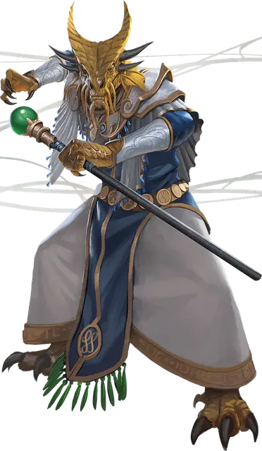

Зиндар
Zindar
Средний Гуманоид (Полудракон), законно-добрый, именной НИП

Класс Доспеха 13 (природный доспех)
Хиты 110 (17к8 + 34)
Скорость 30 футов
| мод | спас | ||
|---|---|---|---|
| СИЛ | 14 | +2 | +2 |
| ЛОВ | 10 | +0 | +0 |
| ТЕЛ | 14 | +2 | +5 |
| мод | спас | ||
|---|---|---|---|
| ИНТ | 16 | +3 | +3 |
| МДР | 15 | +2 | +5 |
| ХАР | 18 | +4 | +4 |
Навыки История +9, Магия +6, Проницательность +5, Расследование +9
Сопротивление урону огонь
Чувства слепое зрение 10 футов, тёмное зрение 60 футов, пассивное Восприятие 12
Языки Общий, Дварфийский, Драконий, Первичный
Опасность 8 (3900 опыта)
Бонус мастерства +3
Особенности
Использование заклинаний. Зиндар является заклинателем 14-го уровня. Его базовой характеристикой является Харизма (Сл спасброска от заклинаний 15, +7 к атакам заклинаниями). Зиндар знает следующие заклинания чародея:
• Заговоры (неограниченно): огненный снаряд [fire bolt], дружба [friends], свет [light], волшебная рука [mage hand], починка [mending], сообщение [message];
• 1 уровень (6 ячейки): волшебная стрела [magic missile], щит [shield], усыпление [sleep];
• 2 уровень (4 ячейки): обнаружение мыслей [detect thoughts], открывание [knock];
• 3 уровень (3 ячейки): подсматривание [clairvoyance], языки [tongues];
• 4 уровень (3 ячейки): подчинение зверя [dominate beast], каменная кожа [stoneskin];
• 5 уровень (3 ячейки): удержание чудовища [hold monster], телекинез [telekinesis];
• 6 уровень (1 ячейка): истинное зрение [true seeing];
• 7 уровень (1 ячейка): град [ice storm].
Драконьи крылья. В качестве бонусного действия на своём ходу Зиндар может расправить пару драконьих крыльев на спине, получая скорость полёта 30 футов, пока он не отклонит эту черту бонусным действием.
Персонализация Зиндара.
Идеал. «Я горжусь своей работой, и мне нравится честно вести дела».
Привязанность. «Порт Нянзару – мой дом. Я не могу даже представить тех, кто хотел бы принести вред городу и его жителям».
Слабость. «Я не злюсь. Я понимаю».
Действия
Боевой посох. Рукопашная атака оружием: +5 к попаданию, досягаемость 5 фт., одна цель. Попадание: 5 (1к6 + 2) дробящего урона, или 6 (1к8 + 2) дробящего урона, при использовании двумя руками.
Оружия дыхания (перезарядка 5–6). Зиндар использует один из следующих видов оружия дыхания:
• Огненное дыхание. Зиндар выдыхает огонь 15-футовым конусом. Все существа в этой области должны преуспеть в спасброске Ловкости Сл 18, получая 22 (4к10) урона огнём при провале, или половину этого урона при успехе.
• Ослабляющее дыхание. Зиндар выдыхает газ 15-футовым конусом. Все существа в этой области должны преуспеть в спасброске Силы Сл 15, иначе в течение 1 минуты будут совершать с помехой броски атаки, основанные на Силе, проверки Силы и спасброски Силы. Существо может повторять этот спасбросок в конце
Описание
Этот золотой полудракон, управляющий доками Порта Нянзару и отслеживающий манифесты кораблей. Волшебник впечатляющих способностей, торговые князья хорошо платят Зиндару за его работу. Он также является ключевым членом Общества Йетепка и отличным источником информации о городе. Зиндар хочет стать искателем приключений, но он хорошо знает опасности Чульта, чтобы понять, что большинство тех, кто отправляется в экспедиции по исследованию джунглей, никогда не вернётся.
Зиндар часто использует заклинания в своей повседневной работе, накладывая сообщение [message], чтобы доставлять послания для работников доков, обнаружение мыслей [detect thoughts] для заглядывания в разум капитанов кораблей, открывание [knock] для вскрытия и осмотра контейнеров, подсматривание [clairvoyance] для заглядывания в судовые трюмы, подчинение зверя [dominate beast], чтобы успокоить нервную животных и т. д.